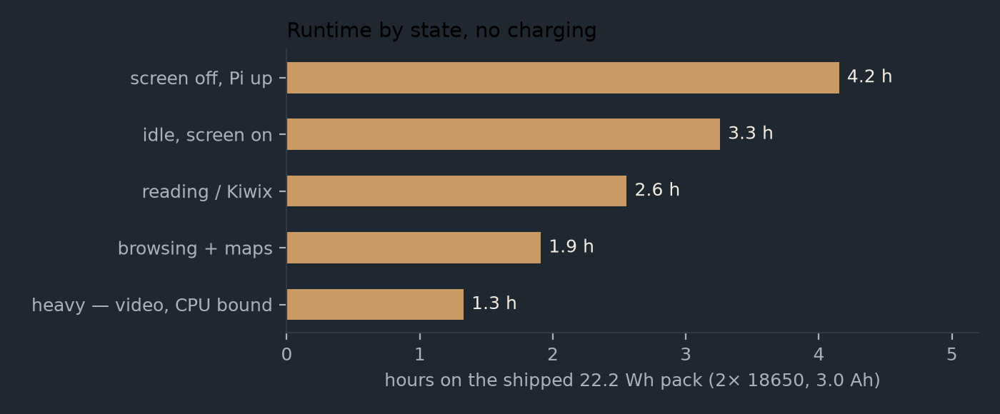
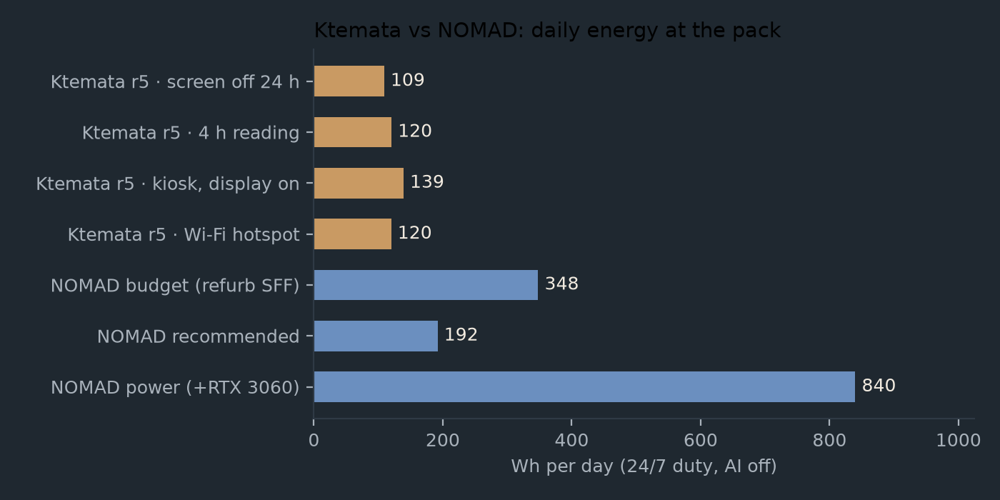
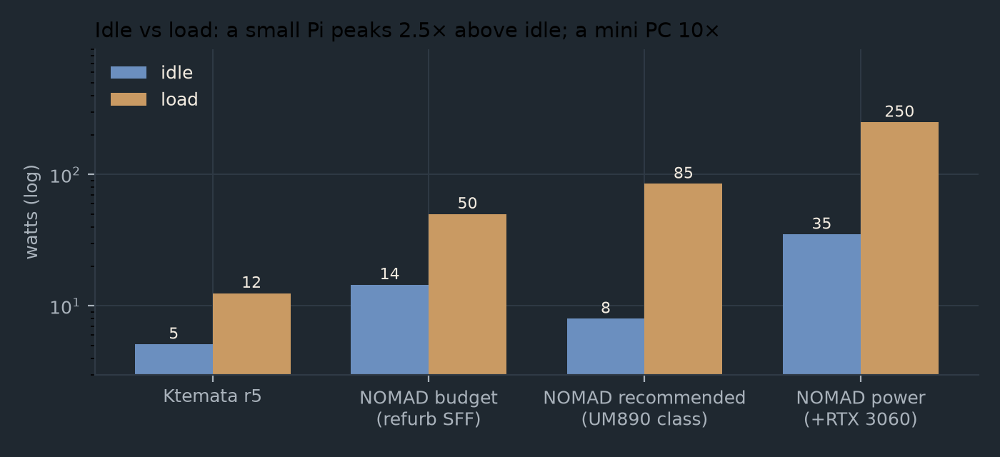

Power
What the r5 handheld actually draws, what its own pack gives back, and how both compare with a 24/7 Project NOMAD station over the same twenty-four hours.
- 4.0 Wscreen off, Pi 5 up, from the 5 V rail
- 5.1 Widle with the 5″ display lit
- 22.2 Wh2× 18650 in 2S — the pack it carries
- 2.6–4.2 hreading to screen-off, no charging
Where the energy goes
Everything on the device hangs off one 5 V rail. The UPS HAT (B) takes the 2S pack (6.0–8.4 V), bucks it down at an efficiency of about 0.88, and the Pi distributes it to the display, the SSD and the status microcontroller. Charging comes in the other way, at 8.4 V, through the same HAT.
Component draws
| Component | Idle | Load | Source |
|---|---|---|---|
| Pi 5 (4 GB) | 3.0 W headless 3.6 W with Ethernet + USB + HDMI | 8.8 W all-core up to 16 W with USB-SSD + 4K | raspberry.tips, Oct 2026 |
| Pi 5, soft-off | 1.7 W — the PMIC stays alive | — | same |
| Touch Display 2, 5″ | 1.4 W (backlight) | 1.4 W | Pi product brief |
| NVMe, WD SN740 | ~0.5 W | 4.7 W max | drive datasheet |
| FireBeetle 2 + 1.3″ OLED, radios off | ~0.2 W | ~0.2 W | ESP32 ~40–50 mA at 3.3 V + OLED, estimate |
| UPS HAT (B) 2S → 5 V buck | — | η ≈ 0.88 assumed | not measured |
| — | — | removed in r5; milliwatts in forced mode |
States and runtime
The pack column applies η = 0.88 and a 0.85 usable depth of discharge, so 22.2 Wh gives about 16.6 Wh at the 5 V rail. The BOM does not fix a cell capacity, so both 3.0 Ah and 3.5 Ah cells are shown.

| State (r5) | 5 V rail | at pack | 22.2 Wh | 25.9 Wh |
|---|---|---|---|---|
| screen off, Pi up | 4.0 W | 4.5 W | 4.2 h | 4.8 h |
| idle, screen on | 5.1 W | 5.8 W | 3.3 h | 3.8 h |
| reading / Kiwix | 6.5 W | 7.4 W | 2.6 h | 3.0 h |
| browsing + maps | 8.7 W | 9.9 W | 1.9 h | 2.2 h |
| heavy (video/CPU) | 12.5 W | 14.2 W | 1.3 h | 1.5 h |
r5 specifically. The sealed host has no through-wall vent, so the Pi 5 reaches its 80 °C throttle point under sustained load instead of holding boost. That does not change idle or reading draw — it caps the heavy row in time rather than in watts. The 12.5 W heavy figure is therefore an upper bound that the thermal limit enforces.
Twenty-four hours, same for every machine
Ktemata is a handheld, but a machine that is on all day can be priced against a station that is on
all day. Three of the four Ktemata rows below are deliberately unflattering duty profiles, not the
handheld best case: a pure server role, normal mixed use, and a wall display nobody switches off.
One row is the shipped Wi-Fi hotspot (post-install.sh --hotspot), which adds an
estimated 0.4 W. NOMAD is headless, so 100 % of its day is idle or loaded with no display
of its own. Its AI is off in every row.

| Platform | Draw | Wh/day | Solar panel | Battery, 1 day | €/yr |
|---|---|---|---|---|---|
| Ktemata r5 — screen off 24 h | 4.0 W (5 V) | 109 | 48 W | 128 Wh | €12 |
| Ktemata r5 — 4 h reading + 20 h off | 4.4 W (5 V) | 120 | 53 W | 142 Wh | €13 |
| Ktemata r5 — kiosk, display on 24 h | 5.1 W (5 V) | 139 | 61 W | 164 Wh | €15 |
| Ktemata r5 — Wi-Fi hotspot (est. +0.4 W) | 4.4 W (5 V) | 120 | 53 W | 141 Wh | €13 |
| NOMAD budget (refurb SFF) | 14.5 W (wall) | 348 | 153 W | 409 Wh | €38 |
| NOMAD recommended (UM890 class) | 8.0 W (wall) | 192 | 84 W | 226 Wh | €21 |
| NOMAD power (+RTX 3060) | 35.0 W (wall) | 840 | 369 W | 988 Wh | €92 |
Costs are the grid-price equivalent of the energy at €0.30/kWh, not a purchase. Read against the handheld's own pack, the last two columns are the interesting ones: Ktemata's 22.2 Wh pack is a 3–4 hour buffer, while a 24/7 NOMAD station needs 226–988 Wh to ride out a single day without sun. The pack does not scale into that role; it was never meant to.
The shape of the load

| Platform | Idle | Load | Load / idle |
|---|---|---|---|
| Ktemata r5 | 5.1 W (5 V) | 12.5 W (5 V) | 2.5× |
| NOMAD budget (refurb SFF) | 14.5 W | 50 W | 3.4× |
| NOMAD recommended (UM890 class) | 8.0 W | 85 W | 10.6× |
| NOMAD power (+RTX 3060) | 35.0 W | 250 W | 7.1× |
The shape matters more than any single number. A library server spends most hours idle, which is why the recommended NOMAD tier uses less energy per day than the cheaper budget tier despite costing about three times as much. Ktemata goes one step further: it is not merely low at idle, its whole range is small, and the machine is off between sessions because there is nobody to serve.
Assumptions that could be wrong
- Assumptions, not measurements: η = 0.88 for the HAT (B) buck, 0.85 usable depth of discharge, 3.5 peak-sun-hours, 0.65 panel derate, €0.30/kWh. The HAT (B)'s INA219 at I²C 0x42 reports the pack side directly once the firmware reads it — that is the measurement to make first.
- Cell capacity drives the runtime. 3.0 Ah cells give 22.2 Wh, 3.5 Ah cells 25.9 Wh (+17 %); both columns are above because the BOM does not fix a capacity.
- Pi 5 soft-off is not off: ~1.7 W until the supply is cut. On r5 the UPS keeps the 5 V rail alive, so "screen off, Pi up" is a real state, not a figure of speech. Only the HAT's output switch (or pulling the pack) reaches zero.
- Ktemata figures are at the 5 V rail, NOMAD's at the wall including the PSU. The "at pack" column exists so the two can be compared without pretending the conversion is free.
- The NOMAD power build's idle is inferred, not measured — no review publishes a 24/7 idle for that exact combination.
- AI-off NOMAD still loads hard when busy: installing content, transcoding or compiling reaches 65–90 W. The daily figures assume idle-dominated use, which is what a library server is.
- r5's thermal limit is a time limit. In the sealed host the Pi 5 throttles under sustained load, so a NOMAD-style always-busy workload is not something r5 could do even at its wattage.
- The hotspot's 0.4 W is an estimate, not a Pi 5 measurement; it is the same order as the Prepper Disk's Pi 4B figure.
Reproduce it
Every figure on this page comes from one script, which also writes the charts. Edit the measured constants at the top of it and the tables and images follow, so the prose and the data cannot drift apart.
python3 work/scripts/power_chart.py # tables + the white docs charts
python3 work/scripts/power_chart.py --tables # tables only, no images
python3 work/scripts/power_chart.py --site # the dark charts this page uses
python3 work/scripts/power_chart.py --compare # Prepper Disk tables + chartsThe full derivation, including the NOMAD measurement sources, is in docs/POWER.md.